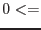
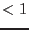

| Parameter | Mand | Type | Default | Constraints | ||||||||||||||||
| instexpid | yes | string | R1U571 | six-characters long | ||||||||||||||||
|
A six-character string which must uniquely identify one exposure
in the current ODF pointed at by the environment variable SAS_ODF.
The first two characters designate an instrument
(M1, M2, PN, R1, R2, OM), the
third character must be S or U for the schedule status
of the exposure and the last three characters are the zero-padded
exposure number within the ODF.
| ||||||||||||||||||||
| attset | no | data set | atthk.dat | must exist | ||||||||||||||||
|
The name of the observation-wide attitude time series data set created by
atthkgen.
| ||||||||||||||||||||
| timecol | no | string | TIME | name of existing D-type column in attset | ||||||||||||||||
|
The name of the column in the attitude data set containing the time tags -
passed to tabgtigen
in parameter timecolumn. | ||||||||||||||||||||
| racol | no | string | AHFRA | name of existing D-type column in attset | ||||||||||||||||
|
The name of the column in the attitude data set containing the Right Ascension
values of the star tracker viewing direction. | ||||||||||||||||||||
| deccol | no | string | AHFDEC | name of existing D-type column in attset | ||||||||||||||||
|
The name of the column in the attitude data set containing the Declination
values of the star tracker viewing direction. | ||||||||||||||||||||
| apacol | no | string | AHFPA | name of existing D-type column in attset | ||||||||||||||||
|
The name of the column in the attitude data set containing the
astronomical position angle values. | ||||||||||||||||||||
| gtitable | no | table | attgti.ds:STDGTI | valid table identifier | ||||||||||||||||
|
The name of the resulting output GTI table - can be the name of
an already existing table (which will get overwritten) or the name
of a new one in an existing or new data set. | ||||||||||||||||||||
| onlylastatt | no | boolean | false | none | ||||||||||||||||
|
If true only the last attitude points (100) are taken for calculating
(median) the reference attitude for filtering. | ||||||||||||||||||||
| filtertype | no | filter type selector | cone | cone | ||||||||||||||||
|
A selection switch which determines the type of selection expression
that the attitude time series is filtered with. cone and pyramid
select the fixed cone- and pyramid filters (see above) respectively.
The value user allows the specification of the expression
directly via the parameter expression.
| ||||||||||||||||||||
| expression | no | attitude data filtering expression | selectlib-compliant expression | |||||||||||||||||
The expression that is to be used to perform the attitude data filtering
in case filtertype=user. Before the expression is
passed to selectlib
the following substitutions are carried
out:
skyvector(%RA%*#RAD, %DEC%*#RAD) in cone(skyvector(%RA_MED%, %DEC_MED%), %TOL_1%) | ||||||||||||||||||||
| tolangles | no | list of tolerance angles | #ARCMIN | selectlib-compliant numerical expressions | ||||||||||||||||
|
A list of selectlib-compliant expressions which must evaluate to
a list of angle values in radians. Those values shall replace the
symbolic constants %TOL_1%, %TOL_2%, , in the
expression given in expression before this is passed to
selectlib
for performing the actual data filtering. For the fixed
cone- and pyramid filter only the first and first two values shall
be used respectively. | ||||||||||||||||||||
| mingtisize | no | minimum size [s] of each GTI | 10 | |||||||||||||||||
|
Any found good time interval shorter than this limit shall not be
considered, i.e., not be written to the resulting output GTI table
gtiset. | ||||||||||||||||||||
| maxfracshort | no | maximum allowed fraction of GTIs shorter than mingtisize | 0.1 | maxfracshort | ||||||||||||||||
|
The ratio of the sum of all too short GTIs (according to the minimum
length given by mingtisize) and the total exposure time must
not exceed this number. If it does a warning is issued and the user
is prompted to review the specified tolerance limits (see tolangles).
| ||||||||||||||||||||
| Parameter | Mand | Type | Default | Constraints | ||||||||||||||||